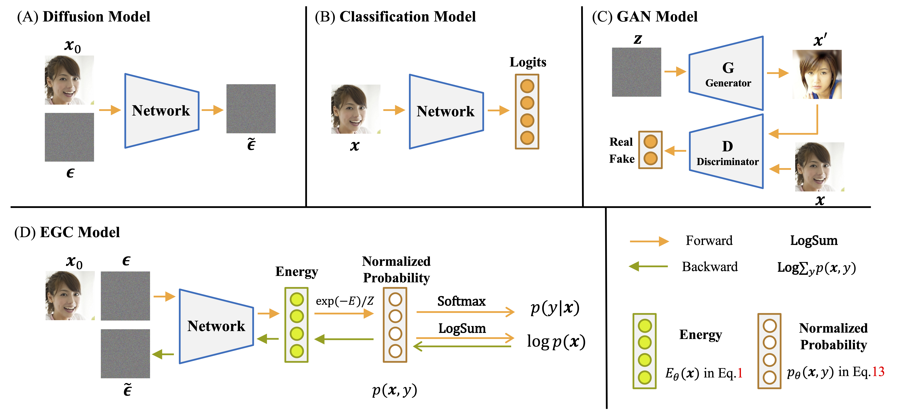
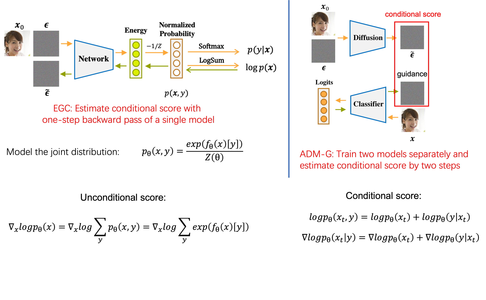
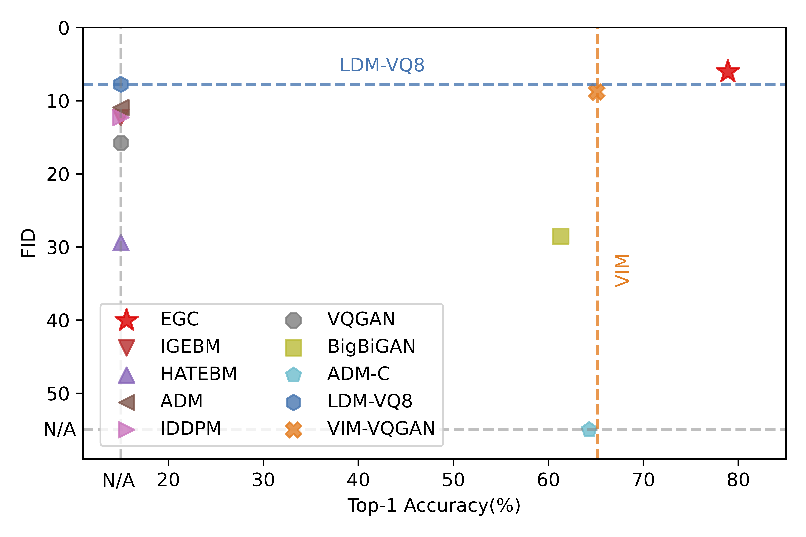
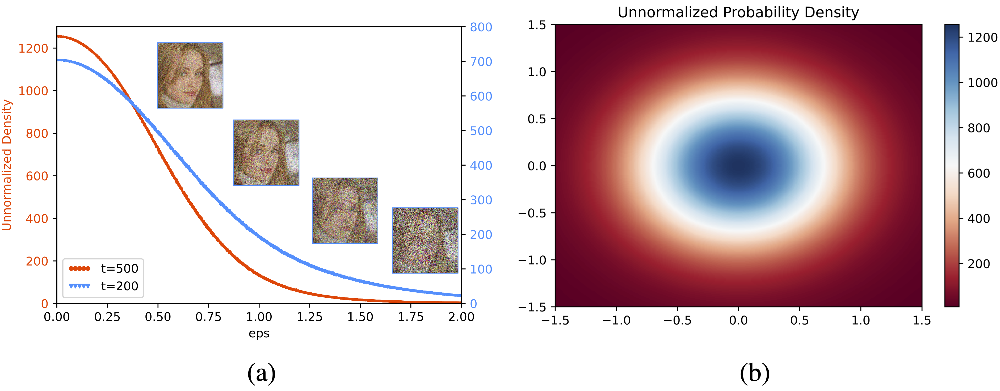

EGC: Image Generation and Classification via a Diffusion Energy-Based Model

(A) Diffusion Model estimates the score (noise) from the noisy scaled image.
(B) Standard Classification Model outputs the logits for minimizing the cross-entropy loss.
(C) GAN Model is composed of a generator model that synthesizes new samples and a discriminator that classifies samples as either real or fake.
(D) EGC Model estimates the joint distribution \(p(\mathbf x, y)\) for classification via the forward propagation of a neural network
and leverages the score estimated from the backward propagation to generate samples from Gaussian noise.
\(Z\) represents the normalizing constant, which is only relevant to the model parameters.
Abstract
Learning image classification and image generation using the same set of network parameters is a challenging problem.
Recent advanced approaches perform well in one task often exhibit poor performance in the other.
This work introduces an energy-based classifier and generator, namely EGC, which can achieve superior performance in both tasks using a single neural network.
Unlike a conventional classifier that outputs a label given an image (\ie, a conditional distribution \(p(y|\mathbf{x}))\),
the forward pass in EGC is a classifier that outputs a joint distribution \(p(\mathbf{x},y)\), enabling an image generator in its backward pass by marginalizing out the label \(y\).
This is done by estimating the classification probability given a noisy image from the diffusion process in the forward pass,
while denoising it using the score function estimated in the backward pass.
EGC achieves competitive generation results compared with state-of-the-art approaches on ImageNet-1k, CelebA-HQ and LSUN Church,
while achieving superior classification accuracy and robustness against adversarial attacks on CIFAR-10.
This work represents the first successful attempt to simultaneously excel in both tasks using a single set of network parameters.
We believe that EGC bridges the gap between discriminative and generative learning.
According to Tweedie's Formula, one can estimate the mean of a Gaussian distribution,
given a random variable \(\mathbf{z} \sim \mathcal{N}(\mathbf{z}; \mathbf{\mu}_{z}, \mathbf{\Sigma}_{z})\)
We approximate the probability density function \(q(\mathbf{x}_t|\mathbf{x}_0)\) by an Energy-based model \(p_{\theta}(\mathbf{x}_t)\),
and optimize the parameters by minimizing the Fisher divergence between \(q(\mathbf{x}_t|\mathbf{x}_0)\) and \(p_{\theta}(\mathbf{x}_t)\):
Compared with directly optimizing the log-probability of EBM,
Fisher divergence circumvents optimizing the normalized densities parameterized by \(Z(\theta)\)
and the target score can be directly sampled from a Gaussian distribution.
Now, we can train an unsupervised EBM with Diffusion Process to generate sample from Gaussian Noise.
EBM has an inherent connection with discriminative models. For the classification problem with \(K\) classes,
the probability of \(y\)-th label is represented using the Softmax function:
The joint probability \(p_{\theta}(\mathbf{x}_t, y)\) is parameterized with a neural network.
And the forward propagation of our EGC model is a discrimination model to predict the conditional probability \(p_{\theta}(y | \mathbf{x})\),
while the backward propagation of the neural network is a generation model to predict the score and classifier guidance to gradually denoise data.
Overall, the training loss of an EGC model is formulated as:
where the first term is reconstruction loss for a noised sample, the second term is a classification loss that encourages the denoising process to generate samples that are consistent with the given labels.
One of the advantage of integrating the energy-based classifier with diffusion process is that the classifier provides guidance in one backward step
to explicitly control the data we generate through conditioning information \(y\).

Comparison of conditional generation between EGC and explicit classifier-guided model.
ImageNet Results
We train EGC model on ImageNet-1k 256x256 and follow Stable
Diffusion to convert images at 256x256 to 32x32, using the pre-trained image autoencoder provided.
Remarkably, EGC achieves superior performance in both tasks with a single neural network,
demonstrating its effectiveness in bridging the gap between discriminative and generative learning.

Results on ImageNet.
Visualization
We adopt a direct optimization of the Fisher divergence instead of the probability \(p_\theta(\mathbf{x}_t)\).
Therefore, we are interested to see whether the neural network would effectively model the target Gaussian distribution.
Given the difficulty in illustrating a high-dimensional Gaussian distribution,
we present that the unnormalized probability density of noised sample \(\mathbf{x}_t\).
Tthe density exhibits a similar shape to the folded normal distribution,
suggesting that the probability distribution learned by the neural network closely approximates the Gaussian distribution.
We further select two orthogonal noises \(\mathbf{z}_1 \bot \mathbf{z}_2\) to plot the two-dimensional probability density function,
which exhibits a similar shape to the Gaussian distribution.

Visualization of probability density.
A promising application of energy-based models is to use the learned prior model for filling masked regions of an image with new content.
We obtain a sequence of masked noisey image at different timesteps and fill the masked pixels with the denoised sample given the previous iteration.
Visualization of inpainting.
We perform an interpolation between the initial white noise samples \(\mathbf{x}_{T}\).
We compare the generated samples from the interpolated noise with the samples obtained through interpolation in the generated samples \(\mathbf{x}_{0}\).
The results demonstrate that our method exhibits superior semantic interpolation effects compared to direct interpolation of generated samples in latent space.
Visualization of semantic interpolation.
BibTeX
@article{
guo2023egc,
title={EGC: Image Generation and Classification via a Diffusion Energy-Based Model},
author={Guo, Qiushan and Ma, Chuofan and Jiang, Yi and Yuan, Zehuan and Yu, Yizhou and Luo, Ping},
journal={arXiv preprint arXiv:2304.02012},
year={2023}
}